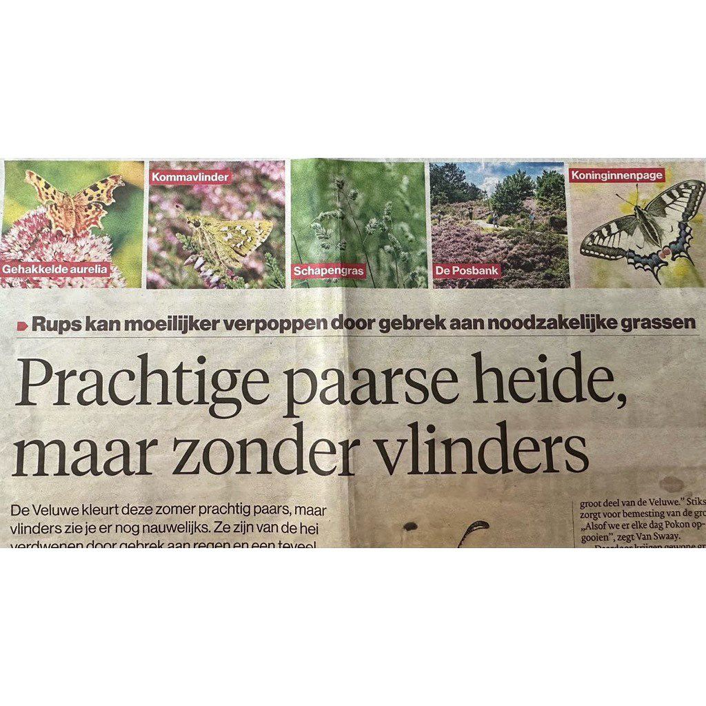

Kropaar, geen schapengras
2 september 2023 · De Gelderlander
- Op de foto
- Kropaar
- Het ging over
- Schapengras

@de_gelderlander praat over ‘schapengras’ maar gebruikt een foto van één van de algemeenste grassen van Nederland: Kropaar. Want ja, niemand die dit leest valt het op toch? Precies de reden dat dit soort stukken even gecontroleerd moeten worden.
@floron_nl